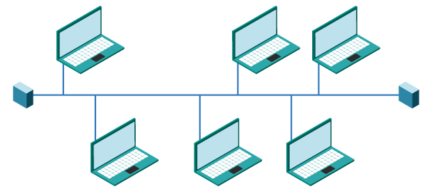
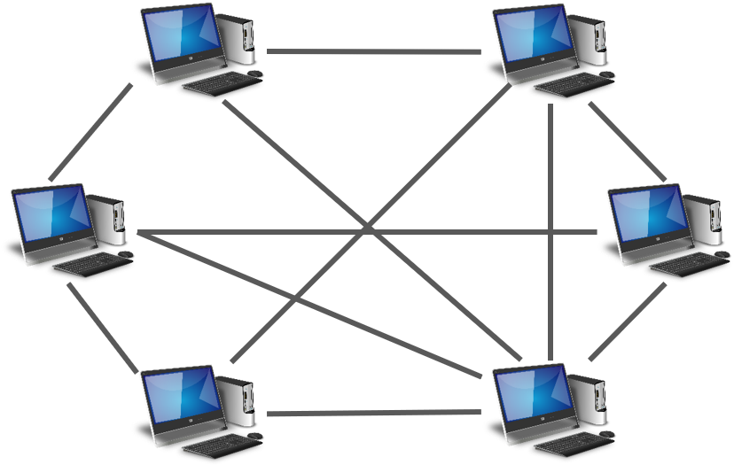
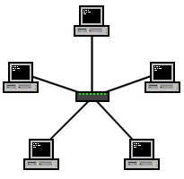
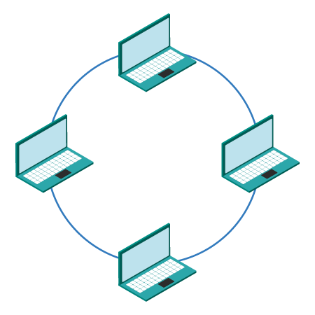
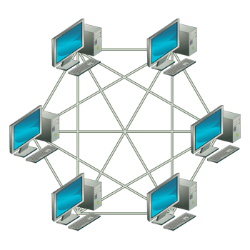
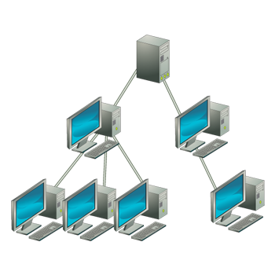
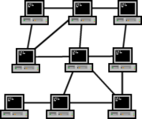

Topologías Físicas y Lógicas
Estructura Base
La topología determina cómo están organizados y conectados los dispositivos de una red, siendo el fundamento que garantiza un flujo de comunicación eficiente y sin saturaciones.
La elección de topología tiene un impacto directo en el rendimiento, el costo operativo, la escalabilidad y la tolerancia a fallos de toda la red.
Tipos Básicos Históricos
1. Topología Bus
Aprox. finales de 1970s
Todos los dispositivos se conectan a un único cable central denominado "backbone". La información es recibida por todos los nodos, pero solo el destinatario correcto la procesa.

Ventajas
Economía de implementación y sencillez de instalación. Requiere cableado mínimo, adecuada para redes temporales de pequeña escala.
Sensibilidad
La interrupción del cable central causa la caída de toda la red. Presenta baja escalabilidad y es susceptible a colisiones en entornos de alta carga.
2. Topología Punto a Punto (P2P)
Aprox. finales de 1960s
Conexión dedicada y exclusiva entre dos dispositivos, sin necessidad de dispositivos intermediarios como switches o routers.

Ventajas
Ancho de banda exclusivo y máxima privacidad garantizada entre los dos nodos enlazados.
Sensibilidad
Resulta inviable su escalado a múltiples nodos, ya que requiere un enlace dedicado por cada par de dispositivos.
Topologías Modernas Robustas
3. Topología Estrella
Topología predominante en redes de área local modernas. Todos los dispositivos se conectan individualmente a un nodo central (switch), el cual administra y distribuye el tráfico de manera controlada.

- El fallo de un nodo individual no afecta al resto de la red.
- Permite un diagnóstico de fallos rápido e individualizado por dispositivo.
- Fácil agregar o quitar equipos sin interrumpir la red.
- Vulnerabilidad crítica: Si el nodo central falla, toda la red queda inoperativa.
4. Topología Anillo
En la topología de anillo, cada dispositivo está conectado con exactamente otros dos nodos —el anterior y el siguiente— formando un círculo cerrado. Los datos viajan en forma de token (testigo), un paquete especial que circula continuamente por el anillo. Solo el dispositivo que posee el token puede transmitir, lo que elimina colisiones de forma elegante.

Ventajas
Sin colisiones por el sistema de token. Rendimiento predecible y estable bajo carga alta. En anillo doble, ofrece redundancia ante fallos.
Sensibilidad
Si un solo nodo o cable falla en un anillo simple, toda la red se interrumpe. Agregar o quitar dispositivos interrumpe temporalmente el servicio.
Uso típico: Redes Token Ring (IBM), redes FDDI de fibra óptica, algunas redes metropolitanas y de operadores de telecomunicaciones. Hoy prácticamente reemplazada por la topología Estrella.
5. Topología Malla
Cada dispositivo se conecta con múltiples vecinos, generando redundancia de rutas. En caso de fallo de un enlace, los datos se redirigen automáticamente por una ruta alternativa disponible.

- Malla completa (full mesh): cada nodo conectado con absolutamente todos los demás.
- Malla parcial: equilibrio entre redundancia y costo; solo algunos nodos tienen múltiples conexiones.
- Los protocolos OSPF y BGP seleccionan la ruta óptima en cada momento.
Alta disponibilidad: La interrupción de múltiples enlaces simultáneos no detiene la transmisión, ya que existen rutas alternativas disponibles. Es la columna vertebral de Internet.
6. Topología Árbol (Jerárquica)
Extensión de la Estrella — muy común en redes corporativas
Estructura jerárquica con un nodo raíz en la cima, del que se ramifican nodos intermedios, y de estos se desprenden los nodos hoja (dispositivos finales). Es la topología dominante en grandes corporaciones y campus universitarios.

- Combina características de la topología Estrella y Bus.
- Permite segmentar la red por departamentos o pisos de forma ordenada.
- Muy escalable: se pueden agregar nuevas ramas sin reconfigurar toda la red.
- Vulnerabilidad: Si el nodo raíz falla, toda la red queda afectada.
7. Topología Mixta (Híbrida)
Combinación de dos o más topologías distintas en una misma red. En la práctica es la más común en entornos empresariales reales, ya que permite aprovechar las fortalezas de cada topología según el segmento de red.

Ejemplo real: Una empresa puede usar topología Estrella dentro de cada piso, topología Árbol para conectar los distintos pisos, y topología Malla parcial para interconectar sus sucursales a nivel nacional.
Tabla Comparativa
Decisión Estructural Final
No existe una topología universalmente perfecta. La selección está condicionada por el presupuesto disponible, el número de nodos y el nivel de resiliencia requerido por la organización:
- Entornos domésticos y pequeñas oficinas: La topología en Estrella ofrece suficiente cobertura al menor costo.
- Redes corporativas de múltiples niveles: La topología en Árbol permite segmentar departamentos de forma ordenada y escalable.
- Entornos críticos (centros de datos, defensa): La topología en Malla justifica su elevado costo al garantizar continuidad operativa ante fallos.
- Mayoría de redes empresariales reales: La topología Mixta combina lo mejor de cada esquema según las necesidades de cada segmento.